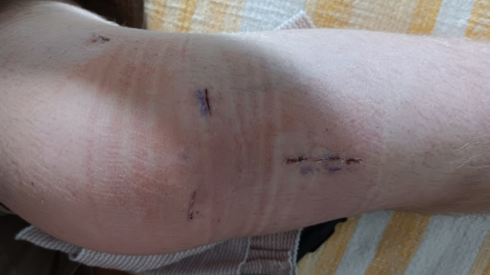

I wanted to create a website for me while still fufilling the assignment requirements.
This page has my personality test results and a couple documents crucial to who I am today.
My Personal Constitution
I love Jesus with all my heart. I worship Him and no other. I am a lifelong learner of His word, the Holy Spirit, and Him. I pray with Him like I am talking to a brother. I actively listen to the Holy Spirit and live out His commands. I represent Him in all my relationships with others. I make the devil resent me and my work and will continue to do that until the day I am called home. I am a servant. I serve the Lord and his Children willingly and happily. I am the first to show up and the last to leave. I give my best work at any task I am assigned, and always exert 110%. I love my parents as they have loved me through the good, the bad, and the ugly. Through my hardships, they loved me, so I willingly love them through theirs. I strive to be like my dad, he is an example of what a stronger man looks like. I am constantly observing and celebrating admirable qualities in my Mom that I want in my future spouse. I love my younger siblings and will until we are old and grey. I make sure we have a strong healthy relationship. I never let small worldly problems hinder my relationship with them. I am someone that they look up to and admire. I pursue good healthy relationships with others that I admire. I always build my friends up and never tear them down. I am the friend to others that I would want and have. I respect women around me as God’s daughters and interact with them through this mindset. I never lead them down an emotional rabbit trail prematurely. I devote my time to my brothers around me whom I admire and respect. My close friends are good, strong, God-fearing men and women that I share life with. I am a lifelong learner of the Bible and God’s creation. I seek wisdom and knowledge willingly, with an open heart from trusted sources and people who have earned my respect. I am a humble seeker of truth. I always strive to grow. I call upon the Lord daily to help me with this because I know that only He can provide true change within me. I read the Bible every day and make a point of praying about what I have red afterwords. I purposely and actively set my mind on God and all of his wonders throughout my day. I am healthy and strong. I am committed to regular exercise and a healthy diet so that I am ready to slay any dragons that come to destroy myself and those around me I am a generous giver and give back what has been given to me. When God blesses me financially, I immediately and willingly bless his kingdom and the people in it. I don’t covet money over family, friends, and God. Money is not an idol in my life and never will be. When God chooses to give me a wife, she will be the love of my life second only to God. She will flourish under my leadership, and she will feel protected and safe when she is with me. We will stay true to each other until the good Lord calls one of us home. When God chooses to bless us with children, I will be proud to call them my own and they will be proud to call me Dad. I will put their needs before my own, and they will feel safe when they are in my home. I will protect them. I will lead and guide my future family to heaven come hell or high water. I am a; God-fearing, family-loving, knowledge-coveting, Kingdom serving, always learning, always training, bountifully giving, actively listening, God-following, healthy friendship loving stronger man. Living the life of a stronger man is a duty, privilege, and honor. Never will it be a burden, hindrance, or chore. I will love Jesus and live this document out in my life until the day I die. And when the Lord does call me home, my name will be taken off Satan’s hitlist and I will hear these words from my Savior, “Well done, good and faithful servant”.
My Knee Story
I will start at the beginning. I had never skied in my life so naturally I was a little nervous and excited at the same time. I don’t love high-intensity sports where I am in control of my body and whatever I am using to do the sport, like mountain biking or skateboarding, so I was a little nervous. I had already tried skiing twice but I was having boot issues because I have big calves and they didn't play nice with the ski boots. It was December 9th the day my whole life changed, I started down the mountain on run 1 up at Mission Ridge. I slowly ventured down skiing back and forth across the mountain. I got down the hill and was so excited to do it again so we rode the lift up again. I started down the run again and made it about halfway down the run. I noticed a young child was on the ground with his dad, so I went wide to the left of them and turned sharply around them. I remember my left knee bending inwards laterally towards my right knee and instantly I was in immense pain. I remember closing my eyes and letting my body just fall down the mountain. It was weird, I remember feeling complete peace while I flew through the air. I landed on my knee and spun around on the snow. I pulled out my phone and called my Dad who had gone ahead of me down the mountain. He didn't pick up. I called him again. He didn't pick up. Just then a middle-aged couple and their son who was a few years older than me stopped next to me. They had seen me fall and wanted to make sure I was okay. They asked me a couple of questions about my body and what was hurting. After I explained what happened the son looked at me sighed and said I think it might be your ACL. I remember thinking to myself, there was no way, that’s an injury that only professional athletes get. They called ski patrol and a few minutes later a man with a sled and my Dad came zooming down the mountain and stopped in front of me. The man helped get me into the sled after gathering my gear. He wrapped a tarp around me, ratchet strapped two pieces of wood to my knee, and hauled me down the mountain. I stayed in the infirmary for a while and then went to wait in the truck while my Dad and brother skied for another hour. During that time I texted my kickboxing instructor who I knew worked for Ballard Ambulance. The son’s voice was ringing in my ear, “I think it might be your ACL”. I asked my instructor how long it takes to recover from an ACL injury. He immediately responded explaining that depending on the severity it could take up to a year or two. I remember letting out a sigh of defeat thinking that this could be a possibility. I lived on crutches for two weeks, my mom told me she scheduled an appointment with a physical therapy firm in the valley called Biosports. I remember thinking I dont need anyone telling me what to do, I can do it on my own. This would be one of the biggest lessons that God taught me during this process. It was my birthday December 29th, I went to Biosorts at 7:30 in the morning and met a man named Brenden Wilson. This man would become a pillar in the next year of my life. He explained that based on his assessment of my knee I had possibly torn my meniscus, which is a piece of cartilage preventing the bones in my knee from rubbing on each other. He recommended I do physical therapy to hopefully repair the tear in my meniscus. I did PT with Brenden and his assistant Eric for two months. February 12th, it was the day of the Super Bowl. I went over to a friend's house for a party with a ton of our youth group friends. At halftime, they decided to go out and play a little tackle football. I joined in, and on the first play, I rushed the person with the ball. My knee gave out, I fell and landed on it. I was in more pain that day than I had ever been in my whole life up to then. I went inside and iced for the rest of the game. I instantaneously knew I had made a mistake. I went home that night ashamed of the stupidity I displayed. My parents reassured me that it was an honest mistake. I went to PT that week and explained what had happened and they recommended I go to the orthopedics office in town and get an actual assessment. I went in and they took an X-ray revealing that I had a torn meniscus, the curious thing was they couldn't locate my ACL, so they recommended I get an MRI. A few weeks later I went in for an MRI. The results came back worse than they had thought. I had completely torn my ACL and partially torn my meniscus. The recommendation was surgery. I did a few more sessions of PT but realized that it wouldn't make sense to keep paying for PT when I am going in for surgery to fix the issue. This was the middle of March. I decided to forget about the knee for about half a month until the mission trip. We were in Roatan on a mission trip. I was instructed to “take it easy” because the whole point was we were going down to do construction. So I brought my knee injury to Brian the youth pastor. He designated me to be a cutter, so I worked with Drake Mutch a fellow junior to cut all of the necessary lumber for the various construction projects. During an evening church session while we were there the congregation was allowing the Holy Spirit to lead worship. This involved doing very active dancing, and marching, things I realized I couldn't do for fear of injuring my knee. I broke down. I instantly made the realization that my world had forever changed. I cried for an hour, I was angry with God, but I stuffed it down. My best friend's dad was with me and made the realization what was happening, so he sat with me and prayed the whole time. I went to bed that night emotionally spent, I was angry, tired, and sad all at the same time. On the last day, we were there I talked with a girl, Whitney Clifton, she was dealing with an undiagnosed nerve injury that was affecting her whole body. She was on medication the whole week so that she could function properly without pain. The issue is the medication is dangerous and drastically shortens life span. So she was faced with the reality of going home to immeasurable pain every day. We prayed together, talked, and cried together. She would become a pillar throughout this whole process as well. I went home filled up and broken down at the same time, but again I decided to stuff my frustration. Fast forwarding to the end of June, I was in Waterville at a rodeo camp that the youth group's worship team was playing at. It was a four-day event but I knew I would have to leave early to be home for surgery. It was the day before surgery, I was awaiting a call from either the doctor or my mom explaining the details of the surgery. It was 12:50 when my mom called me, she explained the details, and like a tidal wave, I was instantly depressed. I already knew that I was going to inform the various groups that I was a part of with the details of the surgery. My life forever would be different. I had gone through the past couple of months joking with the excuse that I didn't have an ACL to cover the reality of the situation. I sunk into a hole and didn't talk to anyone really for the rest of the day. It was around 5:00 that night and my friend Ava Mott pulled me aside and told me to suck it up. She told me that God had a reason he allowed this to happen, it was for good, and I needed to capitalize on the time I had left. This was the beginning of another couple of lessons God was teaching me. She encouraged me to look at all of the people who were praying for me in the text messages that I had sent earlier. I had an army of people who were right behind me during this sucky time. So I made the decision to live out the rest of the night being thankful for the people who were with me and the time I had left. I left Waterville that night after being prayed over by my friends feeling totally at peace with the upcoming surgery that would completely change my life. It was the day of the surgery, June 28th. I woke up that morning ready to get it over with. I wanted to just be done with the highly anticipated day and move on, but in the back of my mind, I knew that would not be possible. The surgery was scheduled for mid-morning so my mom and I left the house and headed towards Confluence Health. We arrived and I was prepared for surgery. They wheeled me into a room and told me to breathe into an oxygen mask. The next thing I knew I was sitting upright and in a completely different room. A nurse was standing next to me. Once I had woken up some more she wheeled me into the recovery room where I waited for my mom. She came in and we talked for a bit. Then a different nurse came in and told me I needed to wait for a while until the drowsiness wore off. So we hung out, ate some snacks, I said some things that I would later regret because of the narcotics, and when it was time I put my clothes back on to leave. This would be my first experience where I was completely helpless. I needed to get from the hospital bed to the wheelchair and I needed to scoot to the edge of the bed and lower myself into the wheelchair. I found myself in excruciating pain with the realization that I couldn’t move my leg to support me. We made it in the car and drove home where I was greeted by the rest of my family. I somehow made it to the couch and rested after a long day. Thus starting the 3 weeks of “couch” rest.  I practically lived on the couch for those three weeks. It was exhausting, demoralizing, boring, uncomfortable, and just downright sucky. I filled those three weeks with a ton of things. I got to watch so many rom-coms, I had friends come over and hang out with me, family visited with me, I had stupid knee exercises that I had to do, I ate food, and watched so much TV. But the best thing I did was I red books. I ended up reading close to five or so books during the first two weeks. I finished Endurance, read Humility, read the God Connection, and a couple of others. Then I had the best idea I had had in a long time, I would read the Bible while I was immobile. Cover to cover. But here was the kicker, I challenged myself to do it in a month. Looking back on the challenge now that I am back to “normal” life it was crazy. I did it, I ended up spending a total of 38 accumulated hours over 31 days reading an average of 40 chapters a day each day for a month. This is one of the lessons I learned: God is real, and he gave me life for a reason. I had read of the times in the Bible when God showed up for his people and could now see how God has moved in and through my life in similar ways. Now adays I spend three days out of the week working my knee either at PT appointments or at the gym. I can leg press 360 pounds, I am using a special treadmill that reduces air in a bubble around my legs to decrease the weight that I am running with, and I have the best spiritual connection with God that I have ever had. This is all because of the lessons that he taught me during this whole process. First, I need people around me to support me when I am going through tough things. The people I have chosen to surround myself with are always there for me when I need them most. I can not go through anything by myself, I will fail. This is the plain and simple of it, without Whitney, Brenden, Ava, Lucas, and so many more amazing friends and people in my life to support me I would be depressed with a non-functioning leg. This also applies to needing God to be a part of everything you do. Without God in your life, you will fail and it will suck because you won't have the assurance that whatever is happening in your life God will use for good to affect you and those around you. Hard things will be bad because you are not in Christ. This leads to the second lesson I have learned: God does hard things in your life for a reason. God needed me to wake up. Before the initial injury in December, I was not in a bad place with God, but I wasn’t thriving and being pushed either. I was idle, and as a Christian being idle is so dangerous. Before surgery, I continued to ask god that whatever happened, I pray that he would eventually show me why I went through this whole process. I doubt that he is done working through this experience but he has revealed a ton in my life. He showed me the importance of being confident in his word, he showed me how fun learning can be, he showed me the power of our words and how they affect others, and I learned how fragile life is. He allowed a brother in Christ to go through almost the same situation and as a result, I was able to speak into his life and be a light through a genuinely frustrating time. There is so much more to be pulled from this experience but the third lesson I learned was how completely and utterly helpless I am. I have a unique perspective as to how in control God is over our lives. I can try to control all the facets of my life but at the end of the day what is the point in fighting the path that the literal creator of the universe has set forth for you? My life is not my own and at any moment God could be done with me. I think ultimately I have a better understanding because of this experience of who I am, who god needs me to be, and what my purpose on this earth and in this life is. As weird as it sounds I would encourage everybody to go through a life-altering surgery. This was one if not the best thing to happen in my life.